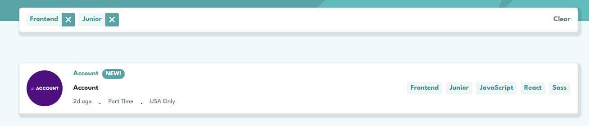
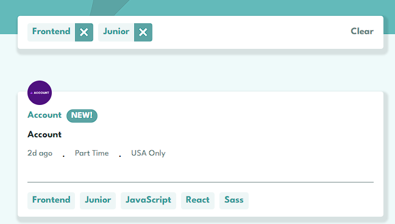

How Page works
This is a Job filtering Page, and here's how you're to filter jobs according to categories specified
- If you're on desktop:
- ** You see those tablets by the right side of the screen, you click on any of them to filter the job listing as desired 
- If you're on mobile
- ** The tablets are located below every container or elements on the page 